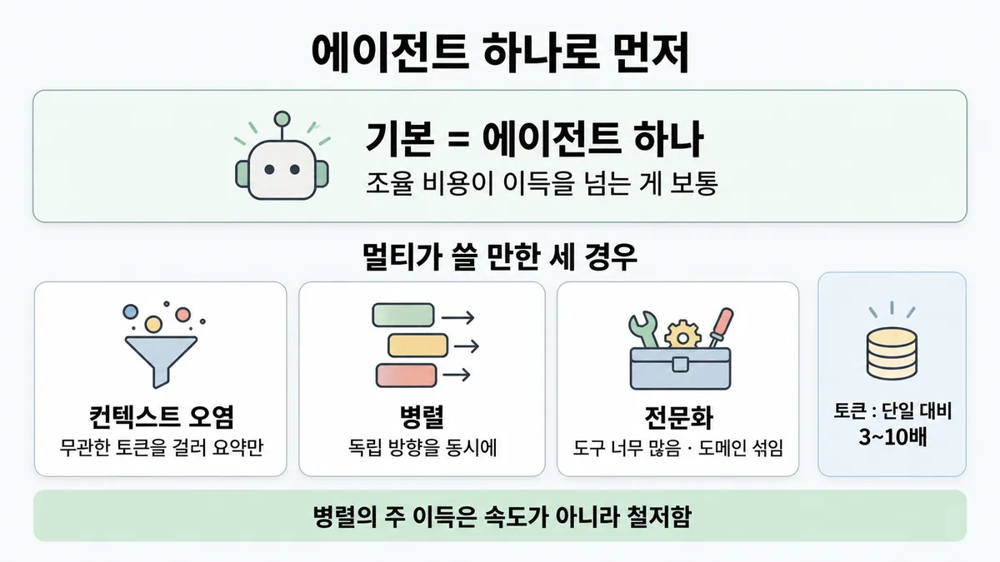
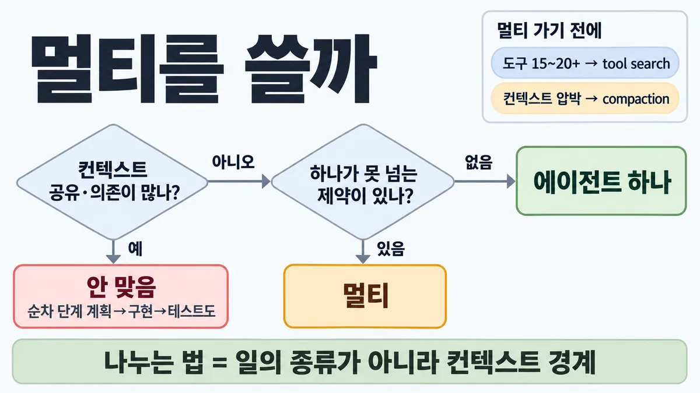

◆ 단일 vs 멀티 에이전트
표시가 없는 문장은 공식 문서에서 확인한 내용이에요. 다른 표시는 읽는 법
왜 배우나 — 시험이 요구하는 것
시험 목표 1.4 멀티 에이전트와 조율 · D1 설계 17%Design multi-agent systems and orchestration strategies
이 개념으로 푸는 판단 (할 수 있어야 하는 것)
- 1.4① 멀티에이전트가 값을 하는 일은? — 멀티에이전트를 쓸까, 에이전트 하나(또는 워크플로)로 둘까
- 3.7③ 서로 얽힌 모듈을 고치는 코딩 작업을 에이전트 5개 병렬로 나누자는 제안 — 에이전트끼리 연결이 맞나? — 멀티 에이전트(agent-to-agent)를 쓸지 — 비용·적합성
한눈에


ELI5
숙제를 혼자 할지, 친구들과 나눠 할지 고르는 거예요.
- 서로 다른 책을 찾아보는 숙제면 나눠서 찾는 게 빨리 넓게 찾아요.
- 한 편의 글을 이어 쓰는 숙제면 나누면 앞뒤가 안 맞아요.
- 나눌 때마다 서로 설명하느라 말이 많아지고 간식값도 늘어요.
- 그래서 먼저 혼자 해 보고, 꼭 필요할 때만 나눠요.
개념 설명
원리
멀티 에이전트가 이기는 이유
- 서브에이전트마다 자기 컨텍스트 창이 있음 → 넓게 뒤지고 요약만 돌려줌(압축). 관심사도 나뉨(도구 · 프롬프트 · 탐색 경로).
- 연구 글 분석 : 성능 차이의 80% 를 토큰 사용량 하나가 설명 → 멀티는 "문제에 충분한 토큰을 쓰게 해 주는" 구조.
지는 이유
- 컨텍스트 복제 · 에이전트 간 조율 메시지 · 넘길 때 요약 → 같은 일에 단일 대비 3~10배 토큰.
- 넘길 때마다 맥락이 빠짐("말 전달 놀이"). 에이전트가 늘수록 실패 지점·유지할 프롬프트·예측 못 할 동작도 늘어남.
- 지금 모델은 실시간으로 서로 조율·위임(delegation)하는 데 아직 서툼.
그래서 기준
- 멀티가 풀어 주는 진짜 제약이 있나 : 컨텍스트 오염 · 병렬 · 전문화.
- decomposition(분해)이 컨텍스트 경계를 따르나 : 같은 맥락이 필요한 일은 한 에이전트에.
- 검증 지점이 있나 : 전체 맥락 없이 결과만 확인할 수 있는 곳.
- 작업 가치가 몇 배의 토큰 비용을 넘나.
두 배수를 헷갈리지 말 것
- 약 15배 = 채팅 대비 (연구 글). 에이전트는 채팅 대비 약 4배.
- 3~10배 = 같은 일을 단일 에이전트로 할 때 대비 (claude.com 글).
규칙과 판단


갈림길
멀티를 쓸까 [1.4①]
안 맞음
모든 에이전트가 같은 컨텍스트를 나눠야 함 · 의존이 많음 · 같은 일의 순차 단계(계획→구현→테스트)
다음 물음 — 무엇이 문제?
컨텍스트 오염
서브에이전트가 걸러 요약만 돌려줌
병렬
서로 독립인 방향을 동시에 파는 너비 우선 조사·검색
전문화
도메인이 섞여 헷갈림 · 서로 충돌하는 시스템 프롬프트
다음 물음 — 무엇이 문제?
전문화
도구가 너무 많음(흔히 20+) · 도메인이 섞여 헷갈림 · 서로 충돌하는 시스템 프롬프트
에이전트 하나로 먼저
조율 비용이 이득을 넘는 게 보통
멀티 가기 전에 [1.4①] [3.7③]
tool search
도구 15~20+ 면 tool search · 켜는 조건 자체는 10개 이상·정의 1만 토큰 초과 등 → ◆ 도구 미리 싣기 vs tool search
compaction
컨텍스트 압박이면 compaction
무엇을 얻나 [1.4①]
더 오래 걸리는 일이 많음
멀티는 총계산이 늘어 단일보다 전체가 더 오래 걸리는 일이 많음
병렬의 주 이득 = 철저함
작업 가치가 그 토큰 비용을 넘어야
흐름
그림 속 이름·금액·시간·토큰 수는 예시예요. 공식 한도·동작은 카드 본문 값이 기준.
장면 글로 보기
칸 : orchestrator → 서브에이전트들 → 요약
규칙 (orchestrator) : 에이전트 하나로 먼저. 하나가 못 넘는 제약이 있을 때만 여럿
질문 : 이 일을 여럿에게 쪼갤 만할까?
① 컨텍스트 오염 ✓
- 시작 : orchestrator — 말 : “이 고객 최근 주문 5건 중 환불 대상 있어?”
- 위임 : orchestrator → 서브에이전트들 : 하위작업 토큰이 많음(1천+) — 쪽지 : 주문 조회 5번 / 한 번에 2,500 토큰 / 서브 컨텍스트 창에 12,500 토큰
- 요약 : 서브에이전트들 → 요약 : 걸러 요약만 돌려줌 — 쪽지 : 환불 대상: 주문 #3 / 주 컨텍스트 창엔 90 × 5 = 450 토큰
- 끝 : 주 작업엔 대부분 무관한 토큰을 걸러 냄 — 총 토큰은 늘어도 주 판단을 지킴
② 병렬 ✓
- 시작 : orchestrator — 말 : “경쟁사 11곳 환불 정책을 비교해 줘”
- 위임 : orchestrator → 서브에이전트들 : 서로 독립인 방향을 동시에 — 쪽지 : 서브 11개 / 회사마다 하나씩 동시에
- 요약 : 서브에이전트들 → 요약 : 요약만 돌려줌 — 쪽지 : 회사별 요약 11개 / 11곳 빠짐없이
- 끝 : 병렬의 주 이득 = 철저함 (속도가 아님)
③ 순차 단계 쪼개기 ≠
- 시작 : orchestrator — 말 : “환불 기능 하나 만들어 줘”
- 위임 : orchestrator → 서브에이전트들 : 계획→구현→테스트 — 쪽지 : 계획 에이전트 → / 구현 에이전트 → / 테스트 에이전트
- 요약 : 서브에이전트들 → 요약 : 말 전달 놀이(거쳐 갈수록 내용이 빠짐) — 쪽지 : 테스트: "구현이 뭘 바꿨지?" / 조율 토큰 > 실제 작업
- 끝 : 순차 단계는 컨텍스트를 공유해야 해서, 쪼개면 손해
규칙 원문 갈림 기준 (갈림길로 그린 규칙)
갈림 기준
에이전트 하나로 먼저. 하나가 못 넘는 제약이 있을 때만 여럿
- 멀티가 쓸 만한 세 경우
- 컨텍스트 오염 : 한 하위작업이 많은 토큰(1천+)을 만들지만 주 작업엔 대부분 무관 → 서브에이전트가 걸러 요약만 돌려줌
- 병렬 : 서로 독립인 방향을 동시에 파는 너비 우선 조사·검색
- 전문화 : 도구가 너무 많음(흔히 20+) · 도메인이 섞여 헷갈림 · 서로 충돌하는 시스템 프롬프트
- Anthropic 연구 글 표현 : 병렬화가 큰 일 · 컨텍스트 창 하나를 넘는 정보 · 복잡한 도구가 많은 일
안 맞음 : 모든 에이전트가 같은 컨텍스트를 나눠야 함 · 의존이 많음 · 대부분의 코딩(진짜 병렬 조각이 적음) · 같은 일의 순차 단계(계획→구현→테스트) · 단순 작업·단일 파일 수정
비용 : 토큰 = 채팅 대비 에이전트 약 4배 · 멀티 약 15배 (연구 글) / 같은 일을 단일 에이전트로 할 때 대비 3~10배 (claude.com 글) → 작업 가치가 그 토큰 비용을 넘어야
속도 : 병렬은 순차보다 빠르지만 멀티는 총계산이 늘어 단일보다 전체가 더 오래 걸리는 일이 많음. 병렬의 주 이득 = 철저함
나누는 법 : 일의 종류가 아니라 컨텍스트 경계로 (기능을 짠 에이전트가 그 테스트도). 잘 되는 경계 = 독립 조사 경로 · 깨끗한 인터페이스로 나뉜 부품 · 블랙박스 검증
멀티 가기 전에 : 도구 15~20+ 면 tool search (◆ 도구 미리 싣기 vs tool search) · 컨텍스트 압박이면 compaction
기준 두 개 주의 : 15~20+ = 멀티 에이전트 글의 "멀티로 가기 전에" 기준 · tool search 를 켜는 조건 자체는 10개 이상·정의 1만 토큰 초과 등 → ◆ 도구 미리 싣기 vs tool search
더 깊이 : 판단 규칙 · 상황 변수 (설명)
판단 규칙
| 조건 | 답 | 근거 |
|---|---|---|
| 서로 독립인 여러 방향을 동시에 파는 넓은 조사 | 멀티 | multi-agent-research-system |
| 한 하위작업이 1천+ 토큰을 만들고 대부분 주 작업에 무관 · 뽑을 기준이 명확 | 서브에이전트로 격리해 요약만 | building-multi-agent-systems |
| 도구가 흔히 20+ · 도메인이 섞여 헷갈림 · 추가할수록 기존 성능 저하 | 전문화 (먼저 tool search 검토) | building-multi-agent-systems |
| 모든 에이전트가 같은 컨텍스트 공유 · 의존 많음 · 대부분의 코딩 | 단일 | multi-agent-research-system |
| 같은 일의 순차 단계(계획·구현·테스트) · 강하게 얽힌 부품 · 자주 동기화할 공유 상태 | 한 에이전트에 | building-multi-agent-systems |
| 단순 작업 · 순차 작업 · 단일 파일 수정 · 단계 간 맥락 유지 필요 | 서브에이전트 없이 직접 | prompting-best-practices |
| 결과만 보고 판정 가능한 검증(테스트 실행) | 검증 서브에이전트 | building-multi-agent-systems |
| 위 제약이 없음 | 단일에서 시작, 증거가 생길 때만 복잡도 추가 | building-multi-agent-systems |
| 작업 가치가 낮음 | 멀티 비용(채팅 대비 약 15배)을 못 감당 → 단일 | multi-agent-research-system |
상황 변수
| 변수 | 값 | 답 쪽 | 근거 |
|---|---|---|---|
| 조각끼리 독립성 | 높음 (다른 소스 · 다른 지역 시장) | 멀티 | building-multi-agent-systems |
| 조각끼리 독립성 | 낮음 (서로 얽힌 모듈) | 단일 | building-multi-agent-systems |
| decomposition 방식 | 일의 종류별(역할별) | 조율 토큰 > 실제 작업이 되기 쉬움 | building-multi-agent-systems |
| decomposition 방식 | 컨텍스트 경계별 | 대체로 효과 | building-multi-agent-systems |
| 목적 | 철저함(더 넓게) | 멀티 | building-multi-agent-systems |
| 목적 | 속도(단일보다 빨리) | 약함 — 총시간은 멀티가 더 긴 경우 많음 | building-multi-agent-systems · 뒤집히는 때 4 |
| 도구 수 | 15~20+ | 멀티 전에 tool search | building-multi-agent-systems |
| 컨텍스트 압박 | 한계 근처 | compaction 이 먼저 줄여 줄 수 있음 | building-multi-agent-systems |
| 플랫폼 | Managed Agents | 코디네이터 + 명단 최대 고유 20개 · 위임 1단계 · 스레드별 격리 컨텍스트 · 샌드박스·파일시스템 공유 | managed-agents multi-agent |
연습 문제
고객지원 Agent 개발팀이 환불 기능 하나를 계획 → 구현 → 테스트 순서로 만들며, 단계마다 에이전트를 하나씩 두는 멀티 에이전트 구성을 제안한다. 그런데 각 단계가 앞 단계의 설계와 코드를 그대로 알아야 한다맥락 공유. 이 구성은 맞나?
시험 대비
함정
- "작업 단계가 여러 개니 멀티" → 순차 단계는 컨텍스트를 공유해야 해서, 쪼개면 손해
- "에이전트를 늘리면 결과가 자동으로 좋아진다" → 조율 비용이 이득을 넘는 게 보통. 몇 달 들인 멀티가 프롬프트 개선한 단일과 같았던 사례
- "15배는 단일 에이전트 대비" → 채팅 대비. 단일 대비는 3~10배
- "90.2% 점수에 도달" → 단일 Opus 4 대비 상대 향상, 내부 연구 eval
- "병렬이니 더 빠르다" → 총시간은 오히려 긴 경우 많음
- 역할별 decomposition(분해 — 기획자·구현자·테스터·리뷰어) → 말 전달 놀이, 조율 토큰 > 실제 작업
- 최신 모델은 서브에이전트를 스스로 과하게 띄움 → 언제 쓰고 말지를 시스템 프롬프트에 적음
- Managed Agents "coordinator(코디네이터)가 최대 20개에 위임(delegation)" → 명단(roster)에 고유 에이전트 최대 20개, 같은 에이전트의 복사본은 여러 번 호출 가능 · 위임은 1단계만
신호
"multi-agent systems use about 15× more tokens than chats."
"Use subagents when tasks can run in parallel, require isolated context, or involve independent workstreams that don't need to share state."
"some domains that require all agents to share the same context or involve many dependencies between agents are not a good fit for multi-agent systems today."
"multi-agent implementations typically use 3-10x more tokens than single-agent approaches for equivalent tasks."
"Outside these situations, the coordination costs typically exceed the benefits."
"The primary benefit of parallelization is thoroughness, not speed."
"Start with the simplest approach that works, and add complexity only when evidence supports it."
더 깊이 : 뒤집히는 때 · 오답 재료 (설명)
뒤집히는 때
1. 컨텍스트 오염이 멀티를 정당화하는 때 (비용은 오히려 늘어남)
- 조건 : 상담 한 건에서 주문 조회를 5번, 조회 결과가 매번 2,500 토큰인데 주 판단에 필요한 건 90 토큰.
- 계산 : 단일이면 5 × 2,500 = 12,500 토큰이 주 컨텍스트에 쌓임. 서브에이전트로 격리하면 주 컨텍스트엔 5 × 90 = 450 토큰. 대신 서브가 원문 12,500 + 자기 프롬프트를 따로 읽으므로 총 토큰은 늘어남.
- 판단 : 비용을 줄이는 선택이 아니라 주 에이전트의 판단 품질을 지키는 선택. 지문이 "비용 최소"만 묻는다면 답이 바뀔 수 있음.
- 등급 : 계산 (1천+ · 대부분 무관 조건은 확인)
- 근거 : building-multi-agent-systems
2. 배수로 비용을 어림할 때 (새 숫자)
- 조건 : 단일 에이전트로 하면 입력 6만 토큰이 드는 조사.
- 계산 : claude.com 기준 3~10배 → 18만~60만 토큰. Opus 5.5 입력 $4/MTok 로 입력만 치면 $0.24 → $0.72~$2.40.
- 대조 : 연구 글 기준으로 쓰려면 채팅 기준값이 필요 — 채팅 1회 1만 토큰이면 에이전트 약 4만, 멀티 약 15만.
- 전제 : 출력·캐싱·서브에이전트 모델 차이 제외 · 가격 = 2026-09-28 조회값.
- 등급 : 계산
- 근거 : building-multi-agent-systems · multi-agent-research-system · pricing
3. 코딩인데 멀티가 맞는 때
- 조건 : 잘 정의된 API 계약으로 나뉜 프런트엔드·백엔드 작업, 또는 테스트만 돌려 결과를 보고하는 검증.
- 판단 : "코딩 = 단일"로 외우면 틀림. 공식 기준은 코딩 여부가 아니라 컨텍스트를 정말 떼어 낼 수 있나. 깨끗한 인터페이스 · 블랙박스 검증은 잘 되는 경계.
- 근거 : building-multi-agent-systems · multi-agent-research-system("most coding tasks" — 전부가 아님)
4. "병렬이면 빨라진다"가 맞기도, 틀리기도
- 연구 글 : 순차 검색 → 서브에이전트 3~5개 병렬 + 도구 3개+ 병렬로 복잡한 질의 조사 시간을 최대 90% 줄임.
- claude.com 글 : 멀티는 총계산이 늘어 단일보다 전체가 더 오래 걸리는 경우가 많음. 병렬의 주 이득은 철저함.
- 판단 : 비교 대상이 다름. 연구 글 = 멀티 안에서 순차 대 병렬, claude.com 글 = 멀티 대 단일. 지문이 "단일보다 빨리"를 목표로 걸면 멀티는 약한 답.
- 등급 : (두 문장 모두 공식, 해석은 추론)
- 근거 : multi-agent-research-system · building-multi-agent-systems
5. 도구가 많아서 멀티? — 먼저 tool search
- 조건 : 도구 25개, 비슷한 도구를 번갈아 잘못 고름.
- 판단 : 전문화 신호(20+)에 해당하지만, 공식은 멀티 전에 tool search 로 필요할 때 도구를 찾게 하라고 먼저 권함. 도메인이 뚜렷이 갈리고 라우팅이 모호하지 않을 때 전문화.
- 근거 : building-multi-agent-systems · ◆ 도구 미리 싣기 vs tool search
오답 재료
| 오답 | 왜 끌리나 | 왜 틀리나 | 근거 |
|---|---|---|---|
| "작업 단계가 여러 개니 멀티 에이전트" | 단계 = 에이전트로 보임 | 같은 일의 순차 단계는 맥락을 공유 → 쪼개면 손해 | building-multi-agent-systems |
| "에이전트를 늘리면 결과가 자동으로 좋아진다" | 사람 조직처럼 | 세 경우(컨텍스트 오염·병렬·전문화) 밖에선 조율 비용이 이득을 넘음 | building-multi-agent-systems |
| "멀티는 단일 에이전트의 약 15배 토큰" | 숫자는 맞게 외움 | 15배는 채팅 대비. 단일 대비는 3~10배 | multi-agent-research-system · building-multi-agent-systems |
| "90.2% 점수에 도달하니 코딩에도 쓴다" | 점수로 들림 | 단일 Opus 4 대비 상대 향상 · 내부 연구 eval · 코딩은 병렬 조각이 적음 | multi-agent-research-system |
| "기획·구현·테스트·리뷰 에이전트로 역할 분담" | 팀 구조 같음 | 역할별 decomposition 은 말 전달 놀이, 조율 토큰이 실제 작업보다 많았던 실험 | building-multi-agent-systems |
| "subagent(일꾼) 결과를 전부 orchestrator(지휘자) 대화로 복사" | 다 모아야 종합하니까 | 큰 산출물은 파일에 쓰고 가벼운 참조만 넘김 | multi-agent-research-system |
| "Managed Agents coordinator(코디네이터)는 최대 20개까지만 호출" | 목록 문구 | 명단에 고유 에이전트 최대 20개, 같은 에이전트 복사본은 여러 번 호출 가능 | managed-agents multi-agent |
| "서브에이전트가 또 서브에이전트를 두게 하면 더 깊게 판다" | 계층이 깊을수록 강해 보임 | Managed Agents 위임은 1단계만 (명단 가진 에이전트 참조 시 오류) | managed-agents multi-agent |
참고
CCA-F
봄 (서브에이전트 설정 · 컨텍스트 격리 동작) — 여기선 "이 일에 멀티를 쓸 만한가"를 비용 배수 · 의존도 · decomposition 경계로 물음
개념
- ■ observability 세 신호 (위임 사슬 트레이스)
- ◆ 도구 미리 싣기 vs tool search
- ◆ 직접 API vs Agent SDK vs CLI vs Managed Agents
출처
- 가이드 목표 1.4 공식 시험 가이드 v1.0
- 가이드 목표 3.7 공식 시험 가이드 v1.0
- multi-agent-research-system
- building-multi-agent-systems
- prompting-best-practices
- managed-agents multi-agent
- 릴리스 노트 ( — 멀티에이전트 오케스트레이션 공개 베타 2026-05-06)
상태
- 모든 줄을 공식 문서에서 확인
미해결
- 목록 3.7③ 의 "지휘자가 최대 20개에 위임"은 공식과 다름 → 카드엔 "명단 고유 20개 · 복사본 여러 번"으로 고침 (목록은 "최대 20개에 위임" 이었음).
- Skilljar "Introduction to subagents" 과정은 수강 등록 전이라 강의 본문을 못 읽음(과정 페이지에 Register 버튼만) — 등록은 사용자 계정 행동이라 하지 않음.
- A2A(agent-to-agent 프로토콜) : 받은 Anthropic 원문 어디에도 정의 없음. 가이드는 3.7 에서 방식 이름으로만 씀 → ◆ 직접 API vs Agent SDK vs CLI vs Managed Agents 카드 몫.
- "3~10배"는 claude.com 블로그(2025 추정, Sonnet 4.5 예제 코드), "15배"는 2025 연구 글 — 최신 모델에서 배수가 달라졌는지 공식 숫자 없음.